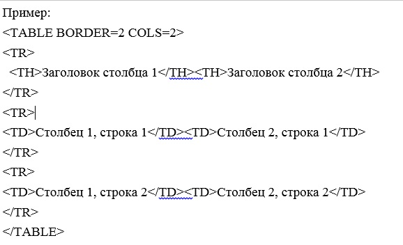

Глава 5. Таблицы
Впервые спецификация таблиц появилась еще в HTML+. До этого группировка текста по графам и столбцам была возможна только при помощи элемента PRE. В настоящее время таблицы поддерживаются всеми браузерами, и интенсивно используются не только для предоставления различных отчетов и прочих упорядоченных данных, но и для оформления страниц. Однако, для оформления следует все-таки использовать таблицы стилей, которые подходят для этих целей намного лучше.
В HTML 4.0 появился новый элемент – COLGROUP, который позволяет связывать между собой еще и колонки. Ячейки таблиц подразделяются на ячейки-заголовки (TH) и ячейки с данными (TD). По своим атрибутам они полностью идентичны. Единственное отличие заключается в том, что многие браузеры по умолчанию отображают содержимое ячеек-заголовков жирным шрифтом с выравниванием по центру.
Элемент TABLE
Элемент TABLE является контейнером, определяющим таблицу. Все прочие элементы таблицы должны быть вложенными в него. Допускается также вложение таблиц одна в другую, т.е. содержимым ячейки может быть другая таблица.

Это простая таблица, состоящая из двух столбцов и трех строк.
Закрывающий тег: требуется.
Собственные атрибуты:
WIDTH – указывает ширину таблицы. Для указания ширины можно использовать как абсолютные значения (в пикселях), так и относительные (в процентах от ширины окна браузера).
HEIGHT – Задает минимальную высоту таблицы в пикселях или процентах от высоты окна.
ALIGN – Отменен. Указывает выравнивание в окне браузера. Может принимать следующие значения:
- • Center – выравнивание по центру.
- • Left – выравнивает по левому краю (принято по умолчанию).
- • Right – выравнивает по правому краю.
BGCOLOR – Отменен. Указывает цвет фона таблицы.
FRAME – Указывает, какие стороны рамки таблицы и ячеек должны иметь рамку:
- • Void – без рамки (принято по умолчанию).
- • Above – только сверху.
- • Below – только снизу.
- • Hsides – сверху и снизу.
- • Vsides – слева и справа.
- • Lhs – только слева.
- • Rhs – только справа.
- • Box, border – со всех сторон.
BORDER – указывает ширину рамки вокруг таблицы в пикселях.
CELLSPACING – задает расстояние между соседними ячейками таблицы.
CELLPADDING – задает отступ между внутренней границей ячейки и ее содержимым.
BORDERCOLOR – задает цвет рамки.
BACKGROUND – задает ссылку фонового рисунка для таблицы.